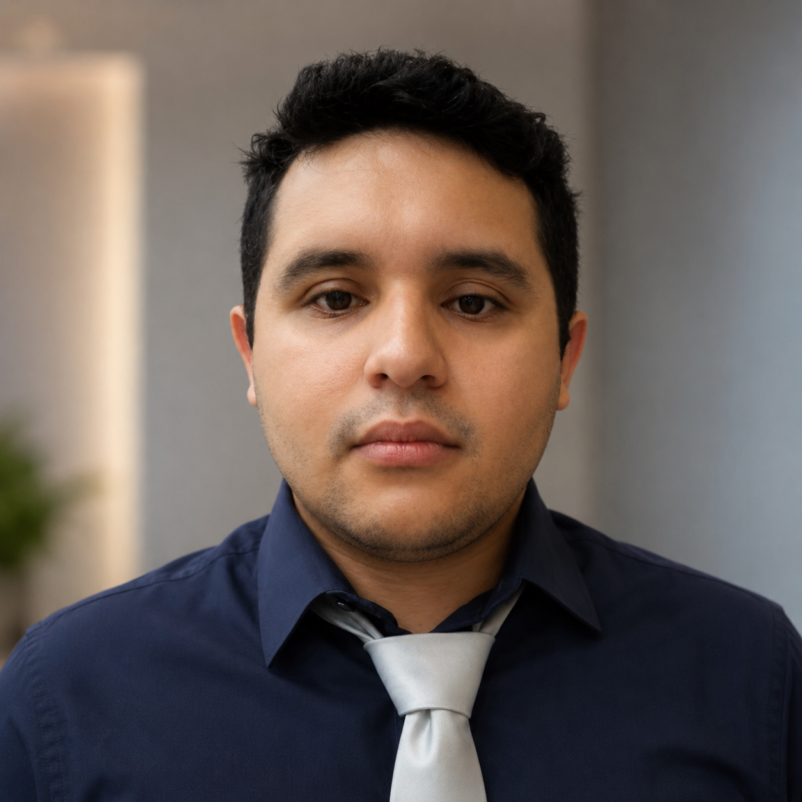

Perfil profissional
Kennedy Mota
Engenheiro de Automação, pesquisador em robótica móvel e doutorando em Engenharia Eletrotécnica e Sistemas Inteligentes.
Atua na interseção entre automação industrial, sistemas embarcados, IoT, processamento de dados e robótica aplicada, com experiência em pesquisa, desenvolvimento de hardware e software, manutenção e melhoria de processos produtivos.

Sobre
Kennedy Mota construiu uma trajetória sólida em engenharia, combinando formação técnica, graduação em Engenharia de Automação, mestrado em Engenharia de Automação Industrial e pesquisa doutoral em sistemas inteligentes. Seu percurso inclui o Centro Federal de Educação Tecnológica de Minas Gerais (CEFET-MG), a Universidade Federal do Rio Grande (FURG), o Instituto Federal de Educação, Ciência e Tecnologia do Rio Grande do Sul - Campus Rio Grande (IFRS) e a Universidade de Coimbra. O grau de mestre foi reconhecido pela Universidade de Aveiro.
Sua atuação profissional reúne ambientes industriais, organizações militares, laboratórios universitários e projetos independentes, sempre com foco em resolver problemas complexos por meio de tecnologia aplicada, análise de dados, automação e desenvolvimento de sistemas.
Competências
- Robótica móvel e sistemas inteligentes aplicados
- Automação industrial e monitoramento de equipamentos
- Desenvolvimento de placas eletrônicas e sistemas embarcados
- Aplicações IoT e servidores em contêineres Docker
- Algoritmos em Python e MATLAB para processamento de dados
- Manutenção industrial, naval e de infraestrutura computacional
- Lean Manufacturing, World Class Manufacturing (WCM) e melhoria de linhas de produção
Trajetória
Experiência Profissional
Research Fellow | Institute of Systems and Robotics (ISR)
Pesquisa na Universidade de Coimbra com contribuição ao projeto GreenBotics, voltado a sistemas robóticos inteligentes para agricultura digital.
Automation Analyst | Wagner, Zamberlam e CIA LTDA.
Desenvolvimento de hardware e software para monitoramento de equipamentos, conectando automação, instrumentação e soluções de controle.
Pesquisador | Laboratório de Oceanografia Costeira e Estuarina (LOCOSTE), Universidade Federal do Rio Grande (FURG)
Apoio ao Laboratório de Oceanografia Costeira e Estuarina, com desenvolvimento de algoritmos em Python e MATLAB para tratamento e análise de dados.
Engenheiro de Hardware Autônomo
Desenvolvimento de placas eletrônicas, sistemas embarcados IoT e servidores de aplicação com Docker.
Estagiário | Marinha do Brasil
Atuação em manutenção de embarcações e desenvolvimento de uma máquina CNC de baixo custo para automatizar processos de reparo, além de participação como desenvolvedor principal em um sistema de alerta para a Estação Naval do Rio Grande.
Estagiário de TI | Universidade Federal do Rio Grande (FURG)
Montagem, manutenção e configuração de computadores e servidores, apoiando infraestrutura tecnológica universitária.
Experiência Industrial Inicial | FCA Fiat Chrysler Automobiles e INBRASP
Vivência em processos automotivos, melhoria de linhas de produção com Lean Manufacturing e World Class Manufacturing (WCM), além de atuação em manutenção.
Formação
Base Acadêmica
Doutoramento
Engenharia Eletrotécnica e Sistemas Inteligentes, Universidade de Coimbra.
Mestrado
Grau de mestre em Engenharia de Automação Industrial, reconhecido pela Universidade de Aveiro.
Graduação
Engenharia de Automação, Universidade Federal do Rio Grande (FURG).
Formação Técnica
Eletromecânica pelo Centro Federal de Educação Tecnológica de Minas Gerais (CEFET-MG) e Refrigeração e Climatização Industrial pelo Instituto Federal de Educação, Ciência e Tecnologia do Rio Grande do Sul - Campus Rio Grande (IFRS).